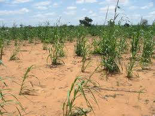
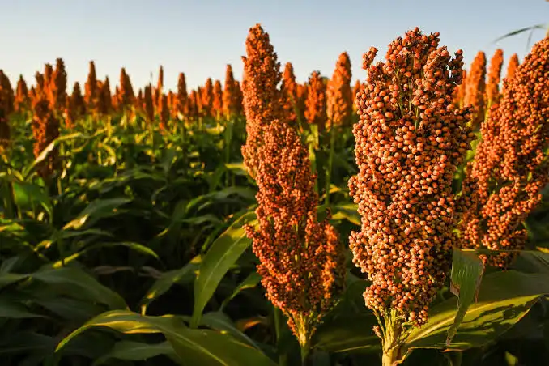
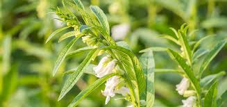
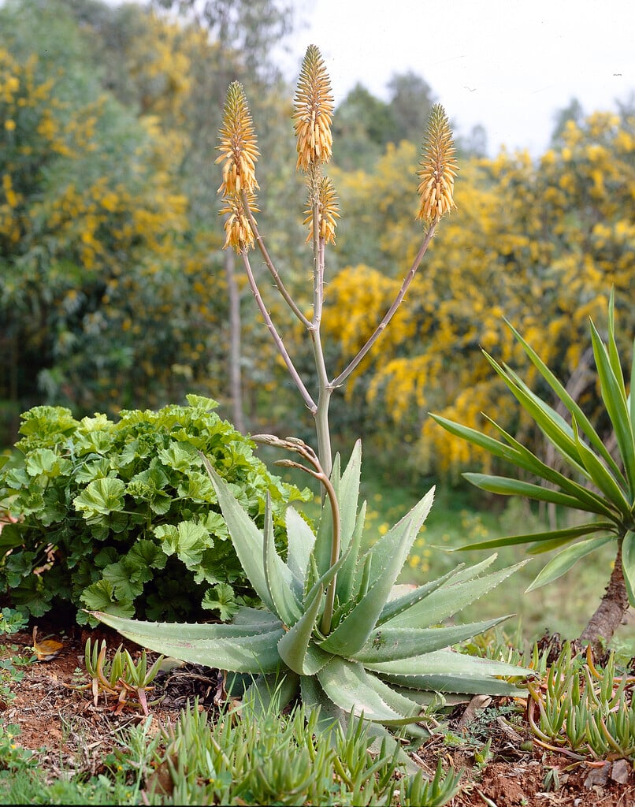
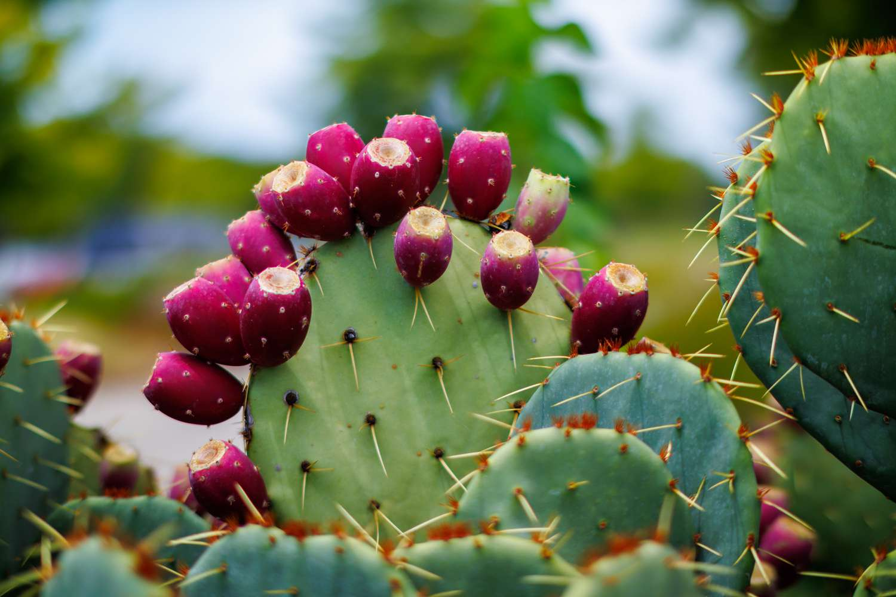

Desert Soil — Crops, Growth Info & Seed Calculator
Desert soils (arid, sandy or calcareous) are low in moisture and organic matter. Use drought-tolerant species, soil amendments, mulches and micro-irrigation for best results.
Drought-tolerant plants commonly grown in desert / arid soils
Below are common choices for arid/desert soils. Each card shows typical growth duration and climate preferences.

Pearl millet (Bajra)
Seed rate: 2–3 kg / acre
Time to maturity: 75–90 days
Climate: Warm, low-rainfall / monsoon or irrigated dryland
Time to maturity: 75–90 days
Climate: Warm, low-rainfall / monsoon or irrigated dryland

Sorghum (Jowar)
Seed rate: ~3 kg / acre
Time to maturity: 90–120 days
Climate: Hot, drought-tolerant; works in low-rainfall areas
Time to maturity: 90–120 days
Climate: Hot, drought-tolerant; works in low-rainfall areas

Sesame (Til)
Seed rate: 2–3 kg / acre
Time to maturity: 100–120 days
Climate: Warm, well-drained, tolerates dryness
Time to maturity: 100–120 days
Climate: Warm, well-drained, tolerates dryness

Date palm
Planting: seedlings/ suckers (not broadcast seed); spacing determines seedlings/acre (e.g. ~63–112 per acre depending on spacing).
Climate: Hot desert; needs groundwater/irrigation for best yields.
Climate: Hot desert; needs groundwater/irrigation for best yields.

Aloe vera
Propagation: offshoots / pups
Time to usable size: 1–2 years depending on conditions
Climate: Arid, well-drained soils
Time to usable size: 1–2 years depending on conditions
Climate: Arid, well-drained soils

Prickly pear (Opuntia)
Propagation: pads/planting material
Time to fruit: usually 1–3 years
Climate: Very drought tolerant; used for fruit, fodder, erosion control
Time to fruit: usually 1–3 years
Climate: Very drought tolerant; used for fruit, fodder, erosion control
Practical notes
- Desert soils often need organic matter, mulching and water-harvesting techniques to retain moisture.
- Choose local drought-adapted varieties and test a small plot first.
- Seed rates and yields vary by variety and sowing method — use the calculator below to adapt for your acreage.